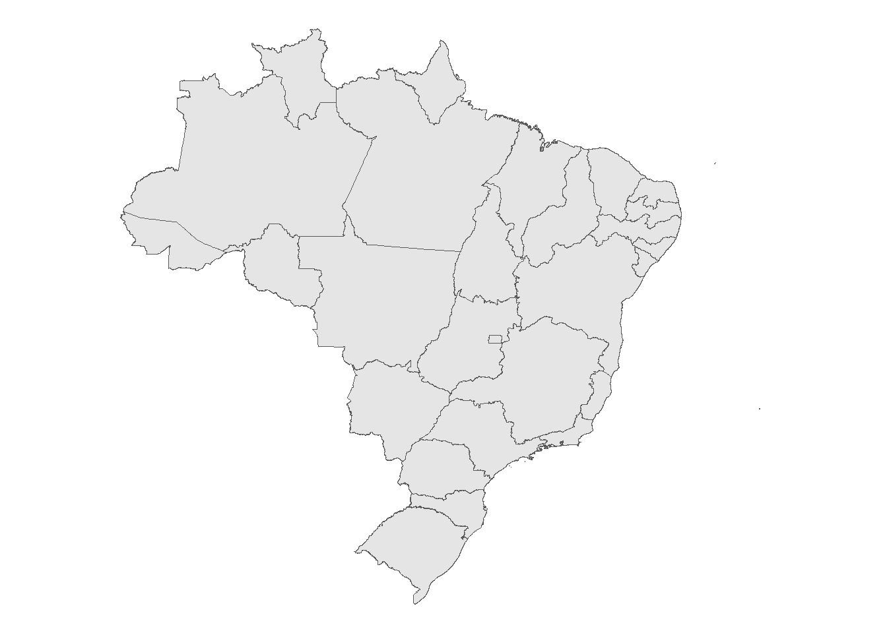

base1 = mtcars
base2 = CO2
base3 = ChickWeight5 Leitura de dados
Tendo visto os fundamentos básicos da programação em R, o próximo passo é aprender a efetuar a leitura de informações para o uso posterior na linguagem. Os dados são a estrutura básica das mais variadas ferramentas interativas geradas pela programação e também consistem na ferramenta fundamental para as constatações científicas empíricas, seja na economia, seja em qualquer outra ciência.
Os dados são armazenados em diversos tipos de arquivo, cada um deles com as suas respectivas propriedades e usuabilidade. Cada tipo de arquivo possui características que precisam ser levadas em consideração, seja na hora de elaborar uma base de dados do zero, seja na hora de ler uma base de dados pronta. Cabe ao usuário conhecer cada uma dessas propriedades e estar pronto para lidar com as particularidades dos mais variados tipos de arquivos.
Nesse capítulo, iremos conhecer as propriedades dos principais tipos de arquivos comumente utilizados para armazenar informações. Também aprenderemos sobre os principais tipos de dados e os seus possíveis usos. Por fim, serão expostas as principais técnicas que possibilitam a importação e a leitura de bases de dados previamente prontas para a linguagem R. O objetivo principal desse capítulo é repassar ao estudante o conhecimento necessário para que ele possa dominar a leitura de bases de dados em R por meio do domínio de técnicas de importação dos mais variados tipos de arquivo.
5.1 O problema da memória
Um dos principais desafios enfrentados na construção de bases de dados é o tamanho dos arquivos. Processar grandes bases de dados exige um grande poder computacional uma vez que, quanto maior o volume de informações, maior é a requisição de memória computacional para realizar o processamento.
Uma base de dados geralmente é composta por objetos que são formados por linhas e colunas. Cada linha e cada coluna adicionada em um objeto aumenta o seu tamanho e por consequência aumenta também a quantidade de memória computacional necessária para processar essas informações. Em vista desse problema, a engenharia de dados está em uma busca constante por soluções que permitam reduzir o tamanho dos arquivos ou a quantidade de memória necessária para processá-lo. Uma das soluções mais fáceis e rápidas para tal é escolher um tipo de arquivo adequado para armazenar as informações. Por exemplo, bases de dados com poucas linhas e poucas colunas podem facilmente ser armazenadas em um arquivo excel, pois apesar de ser uma extensão que exige mais memória, o baixo volume de informações não impedirá um usuário use essa base de dados mesmo com uma máquina com baixo poder computacional. Em contrapartida, uma máquina comum com baixa capacidade de processamento terá dificuldades para gerenciar uma base de dados com inúmeras linhas e colunas armazenadas em um arquivo desse tipo.
Em vista desses conceitos, esse material lista a seguir as principais extensões de arquivos utilizados para armazenar informações nas bases de dados, esclarecendo as suas principais propriedades e usuabilidades, além de demosntrar as técnicas necessárias para abrir esses arquivos na linguagem R.
5.2 Arquivos nativos da linguagem R
A linguagem R possui duas extensões de arquivos nativas, a extensão .Rdata e a extensão .Rds. Quando o usuário possui múltiplos objetos no seu ambiente de trabalho e deseja salvar todos esses objetos em um único arquivo, então o ideal é usar a extensão .Rdata. Esse procedimento também é conhecido como “salvar objetos como imagem”. Nesse caso, o usuário pode salvar o seu ambiente de trabalho completo ou parte dele em um único arquivo que poderá ser usado posteriormente. Para demonstrar, vamos importar três bases de dados nativas para o ambiente de trabalho:
Imagine que seja necessário salvar todo o ambiente de trabalho com as três bases de dados incluídas nele em um único arquivo. Nesse caso, salvar como uma imagem .Rdata pode ser a melhor alternativa. Para tanto, o primeiro passo é informar à linguagem em qual pasta da sua máquina os arquivos devem ser salvos. Isso é feito indicando um diretório de trabalho por meio do comando setwd(), indicando dentro do parênteses a pasta de interesse entre aspas. Nota: no sistema Windows as barras à esquerda devem sempre ser substituídas por barras duplas na fixação do diretório de trabalho.
setwd("Endereço da pasta em que os arquivos serão salvos")Após fixar o diretório de trabalho, o próximo passo é salvar o diretório de trabalho como imagem .Rdata. Para tanto, deve-se usar o comando save.image() e indicar o nome pelo qual o arquivo será salvo sucedido do indicativo do formato .Rdata. Por exemplo, imagine que queiramos salvar todo o ambiente de trabalho com o nome bases_de_dados. Nesse caso, deve-se proceder da seguinte maneira:
save.image("bases_de_dados.Rdata")Uma vez que o arquivo está salvo no seu diretório de trabalho com a extensão .Rdata, para importá-lo para a linguagem R basta usar o comando load() indicando no parênteses e entre aspas o nome do arquivo que será importado.
load("bases_de_dados.Rdata")Já a extensão .rds é aplicada quando o usuário quer salvar um único arquivo do ambiente de trabalho no diretório da sua máquina. Diferente da extensão .Rdata, na extensão .rds o salvamento dos arquivos ocorre com o comando saveRDS(), onde dentro do parênteses deve ser indicado o nome do objeto que está no ambiente de trabalho e que será salvo, sucedido do nome pelo qual o usuário deseja salvar o arquivo. Por exemplo, imagine que queiramos salvar o objeto de nome base1 com o nome base1.rds. Nesse caso, devemos proceder conforme indicado a seguir:
saveRDS(base1, file = "base1.rds")Uma vez que o objeto está salvo com a extensão .rds na sua máquina, para importá-lo para a linguagem R basta usar o comando readRDS(), indicando no parênteses e entre aspas o nome do arquivo de interesse. Por exemplo, para ler o arquivo salvo com o nome base1.rds deve-se proceder conforme indicado a seguir:
readRDS("base1.rds")5.3 Arquivos em formato .csv
Os arquivos .csv geralmente são utilizados para guardar informações textuais, ou seja, são ideais para armazenar textos. Assim, um arquivo nessa extensão sempre terá uma única coluna, podendo conter, entretanto, múltiplas linhas. No entanto, esse tipo de arquivo pode ser utilizado para armazenar informações em múltiplas colunas desde que essas colunas estejam dispersas em uma única coluna comum sendo separadas por um separador. Por exemplo, considere a tabela a seguir:
| Nome | Idade | Sexo |
|---|---|---|
| João | 28 | M |
| Maria | 26 | F |
| Ana | 21 | F |
Em uma estrutura de texto, todas essas informações estariam unidas na mesma coluna, isto é:
| NomeIdadeSexo |
|---|
| João28M |
| Maria26F |
| Ana21F |
Em uma estrutura do tipo .csv todas as informações também estarão na mesma coluna, porém, o final de cada coluna pode ser identificado por um separador de colunas. Para exemplificar, suponha que no caso do exemplo anterior esse separador seja a vírgula. Nesse caso, a tabela anterior passa a ser escrita como:
| Nome,Idade,Sexo |
|---|
| João,28,M |
| Maria,26,F |
| Ana,21,F |
Como esse separador de colunas éconhecido, então fica fácil reconhecer as informações armazenadas nesse arquivo de texto.
Em R, a leitura de arquivos no formato .csv pode ser feita de diferentes maneiras. Uma das formas mais comuns de executar essa tarefa é por meio do uso da função read.csv que é uma função nativa e não necessita de instalação. O uso da função deve obedecer a seguinte forma funcional:
read.csv(
"Endereço/nome do arquivo.csv",
header = TRUE, # TRUE se a primeira linha indica o nome das colunas e FALSE caso contrário
sep = "," # aqui o separador de colunas deve ser indicado entre aspas
)5.3.1 Exemplo: Importando dados via link url
Para exemplificar, considere a planilha de registros fictícios de clientes disponível no endereço https://drive.google.com/uc?id=1zO8ekHWx9U7mrbx_0Hoxxu6od7uxJqWw&export=download. A planilha possui 100 linhas, cada uma delas correspondendo às informações de um cliente específico. Caso o usuário baixe esse arquivo em sua máquina e abra esse arquivo em um editor de texto, notará que as colunas estão delimitadas por uma vírgula. Vamos importar esse arquivo no formato de um data frame nomeando-o de “clientes”.
clientes = read.csv(
file = "https://drive.google.com/uc?id=1zO8ekHWx9U7mrbx_0Hoxxu6od7uxJqWw&export=download",
header = TRUE, # indicando que a primeira linha contém o nome das colunas
sep = ",", # indicando que as colunas estão separadas por vírgula
dec = "." #indicando que o separador decimal é o ponto
)
head(clientes) # mostra as primeiras linhas da planilhaCaso esse arquivo esteja em uma pasta do seu computador em vez de um link url, etão no parâmetro file você deverá proceder como file = Endereço da pasta que contém o arquivo/nome do arquivo.csv”.
Agora considere essa mesma planilha disponível no endereço https://drive.google.com/uc?id=1vPCLNpy6LEhHDvQlHtFBu5L2QzB5bTnv&export=download. Note que se replicarmos o script anterior alterando o endereço para esse link um erro será reportado. Isso ocorre porque nesse caso há um cabeçalho na planilha, isto é, existem linhas na parte superior da planilha que não possuem as mesmas especificações textuais do restante do csv e devem ser desconsideradas no ato da importação. Em outras palavras, as linhas do cabeçalho precisam ser “puladas”. Isso é feito por meio do parâmetro skip dentro da função read.csv. Esse parâmetro recebe a quantidade de linhas que precisam ser puladas. Como o cabeçalho desse exemplo possui duas linhas, então deve-se adicionar skip = 2 no comando, ou seja:
clientes = read.csv(
file = "https://drive.google.com/uc?id=1vPCLNpy6LEhHDvQlHtFBu5L2QzB5bTnv&export=download",
header = TRUE, # indicando que a primeira linha contém o nome das colunas
sep = ",", # indicando que as colunas estão separadas por vírgula
dec = ".", #indicando que o separador decimal é o ponto
skip = 2 # Pula as duas primeiras linhas da planilha
)
head(clientes) # mostra as primeiras linhas da planilhaO usuário pode testar que quando skip < 2, o erro será reportado mesmo assim, ao passo que quando skip > 2, a importação funciona, porém, ajustes precisam ser feitos para que o nome das colunas apareça de maneira correta no data frame.
É importante ressaltar que a função read.csv possui vários outros parâmetros além desses aqui especificados. O usuário pode checar as demais possibilidades de uso de parâmetros da função executando o comando ?read.csv.
5.4 Arquivos excel (.xlsx)
Os arquivos gerados no excel têm linhas e colunas bem definidas e por isso costumam ser maiores do que os arquivos em formato .csv. Ao contrário dos arquivos .csv que são usados para armazenar texto, os arquivos do excel podem guardar informações de diversos formatos com grande utilidade. Esses arquivos remetem à ideia central de um data frame (quadro de dados), onde as linhas representam os indivíduos observados e as colunas mostram as características desses indivíduos.
Existem várias maneiras de importar arquivos .xlsx para a linguagem R, porém, esse material recomenda o uso da biblioteca openxlsx. Essa biblioteca foi criada especialmente para abrir arquivos com esse formato em R e as suas especificações de uso podem ser acessadas em https://cran.r-project.org/web/packages/openxlsx/openxlsx.pdf.
Como vamos utilizar uma biblioteca não nativa, o primeiro passo para possibilitar o uso é fazer a instalação da biblioteca. O usuário pode consultar se a biblioteca já está instalada na sua máquina acessando no Rstudio a aba Packages e procurando pelo nome da biblioteca na guia de busca. Ou pode checar se a biblioteca está instalada usando o seguinte comando:
"openxlsx" %in% installed.packages()Se o output for FALSE, significa que a biblioteca precisa ser instalada. Nesse caso, deve-se usar a função install.packages(), indicando dentro do parênteses e entre aspas o nome da biblioteca que se deseja instalar. Nesse caso, deve-se proceder conforme a seguir:
install.packages("openxlsx")Tendo instalado a biblioteca, o próximo passo é liberá-la para o uso. Isso é feito por meio da função library(), indicando dentro do parênteses e entre aspas o nome da biblioteca que se deseja liberar para o uso. Nesse caso, deve-se proceder conforme a seguir:
library(openxlsx)Para abrir um arquivo com extensão .xlsx com a biblioteca openxlsx, deve-se usar a função read.xlsx. O usuário pode consultar as instruções de uso dessa função executando o comando ?openxlsx. Basicamente, essa função tem a seguinte estrutura de uso:
read.xlsx(
xlsxFile = "endereço do arquivo/nome do arquivo.xlsx",
startRow = "Número da linha em que começa a planilha",
sheet = "Número ou nome da planilha contida no arquivo",
colNames = "TRUE se a primeira linha mostra os nomes das colunas e FALSE caso contrário"
)Para demonstrar, considere que precisamos importar uma planilha com os valores nominais do PIB dos estados do Brasil desde 2002 até 2021 e que essa tabela está disponível no endereço https://drive.google.com/uc?id=1d9dyf5gh4GIdP2YX77b-Q0paAzar0O6b&export=download. As primeiras três linhas da planilha compõem o cabeçalho e devem ser desconsideradas, isto é, a planilha só inicia de fato na linha 4. Assim, a importação deve ser feita conforme a seguir:
pib = read.xlsx(
xlsxFile = "https://drive.google.com/uc?id=1d9dyf5gh4GIdP2YX77b-Q0paAzar0O6b&export=download",
startRow = 4,
colNames = TRUE,
sheet = 1
)
head(pib)5.5 Arquivos excel (.xls)
Os arquivos com extensão .xls são visivelmente semelhantes aos arquivos com extensão .xlsx, inclusive, com as mesmas funcionalidades. A principal diferença entre essas extensões está na estrutura computacional pela qual as duas extensões são formadas. Enquanto os arquivos .xls são criados em uma estrutura binária simples, os arquivos .xlsx. possuem uma ideia de estruturação mais sofisticada e segura baseado em XML. Em termos práticos, a extensão .xls era usada em versões antigas do pacote office, em versões iguais ou anteriores ao Excel 2003. Já a extensão .xlsx passou a ser implementada no excel a partir do office 2007.
Assim como no caso dos arquivos .xlsx, recomenda-se o uso de uma biblioteca para a importação dos arquivos .xls para a linguagem R. Nesse caso, recomenda-se a biblioteca readxl, a qual possui suas suas especificações de uso detalhadas em https://cran.r-project.org/web/packages/readxl/readxl.pdf e instruções exemplificadas de uso em https://readxl.tidyverse.org/.
Os passos são os mesmos indicados na biblioteca utilizada para abrir arquivos .xlsx, ou seja, deve-se verificar se a biblioteca está previamente instalada e proceder com a instalação caso não esteja. Tendo feito a instalação, deve-se liberar a biblioteca para o uso conforme especificado a seguir:
install.packages("readxl")library(readxl)Para importar aquivos na extensão .xls, recomenda-se o uso da função read_xls(). Um detalhe importante a ser esclarecido é que no caso da biblioteca readxl, não é possível importar arquivos diretamente da url, nesse caso, é preciso baixar o arquivo na sua máquina e em seguida usar o endereço da pasta em que o arquivo foi baixado em vez da url. Outra saída é baixar o arquivo em uma pasta temporária criada pelo R e em seguida realizar a importação a partir dessa pasta, que é o que será feito aqui.
Basicamente, a função read_xls() possui a seguinte especificação de uso:
read_xls(
path = "endereço/nome do arquivo.xls",
sheet = "número da planilha",
col_names = "TRUE se a primeira linha mostra os nomes das colunas e FALSE caso contrário",
skip = "número de linhas que devem ser puladas"
)Para exemplificar, considere a mesma planilha do PIB dos estados especificada no exemplo anterior, porém, no formato .xls, disponível no link https://drive.google.com/uc?id=141Tws9jifN8Lk4OpuyHpc9dATED9eZKC&export=download. Inicialmente, vamos criar uma pasta temporária e baixar essa planilha nessa pasta. Porém, o usuário pode baixar o arquivo em uma pasta do seu computador sem a necessidade de realização desse passo:
url <- "https://drive.google.com/uc?id=141Tws9jifN8Lk4OpuyHpc9dATED9eZKC&export=download"
destfile <- tempfile(fileext = ".xls") # criando a pasta e nomeando-a de destfile
download.file(url, destfile, mode = "wb") # baixando o xls na pasta criadaTendo criado a basta e baixado o arquivo nela, o próximo passo é ler esse arquivo. Para tanto, deve-se proceder conforme a seguir:
pib = read_xls(
path = destfile,
skip = 3,
col_names = TRUE,
sheet = 1
)
head(pib)5.6 Dados em coluna fixa
O armazenamento de dados em coluna fixa geralmente é feito em um padrão textual, com uma estrutura semelhante aos arquivos .csv, porém, com o detelhe de que as colunas não estão separadas e não possuem um separador. No caso dos dados em coluna fixa, cada coluna possui um tamanho que corresponde ao número máximo de caracteres que a coluna pode agrupar. Por exemplo, supõe-se que nenhum humano pode chegar a uma idade de quatro dígitos, mas que é possível atingir uma idade de três dígitos. Assim, uma coluna contendo a idade das pessoas deverá ter um tamanho 3 que é o número máximo de caracteres possíveis de se agrupar nessa coluna.
Cada coluna também tem uma posição inicial e uma posição final que corresponde ao número de caracteres da linha onde a coluna começa e termina. Para exemplificar, considere a tabela a seguir contendo a idade e o sexo de cinco pessoas identificadas por um id:
| ID | Idade | Sexo |
|---|---|---|
| 1 | 25 | M |
| 2 | 28 | M |
| 3 | 65 | F |
| 4 | 75 | M |
| 5 | 101 | F |
Caso esses dados sejam agrupados na estrutura de coluna fixa, eles passam a ter apenas uma coluna disposta da seguinte maneira:
| 1025M |
| 2028M |
| 3065F |
| 4075M |
| 5101F |
A primeira coluna só possui um caracter, começa na posição inicial 1, termina na posição final 1 e tem tamanho 1. A segunda coluna possui 3 caracteres, começa na posição inicial 2, termina na posição final 4 e tem tamanho 3. A terceira coluna possui apenas um caracter começa na posição inicial 5, termina na posição final 5 e tem tamanho 1. Geralmente os arquivos de dados em coluna fixa dispõem de um dicionário indicando qual a posição inicial, a posição final e o tamanho das colunas.
Esse tipo de estrutura é comumente utilizada pelo IBGE em suas pesquisas pela capacidade de armazenar mais informações em menos espaço no computador. Como exemplo, a Pesquisa Nacional Por Amostra de Domicílios Contínua (PNAD-Contínua) utiliza essa estrutura de armazenamento de dados.
Para importar esse tipo de arquivo na forma de um data frame no R também é recomendado utilizar uma biblioteca externa. O presente material recomenda o uso da biblioteca readr. Os passos são os mesmos indicados nas bibliotecas anteriores, ou seja, deve-se verificar se a biblioteca está previamente instalada e proceder com a instalação caso não esteja. Tendo feito a instalação, deve-se liberar a biblioteca para o uso conforme especificado a seguir:
install.packages("readr")library(readr)Para ler os arquivos em coluna fixa, recomenda-se o uso da função read_fwf(), a qual possui a seguinte esttrutura de uso:
read_fwf(
file = "Endereço/nome do arquivo.extensão do arquivo",
fwf_cols(
nome da coluna = c(posição inicial, posição final)
)
)Para exemplificar, vamos usar os dados da PNAD-Contínua trimestral referente ao segundo trimestre de 2024. Para tanto, defina um diretório no computador e crie uma pasta com um dado nome. Aqui, vamos nomeá-la de pnad2024. Em seguida, fixe o diretório de trabalho nessa pasta com a função setwd() conforme especificado a seguir:
setwd("D:/pnad2024")Em seguida, acesse o endereço https://www.ibge.gov.br/estatisticas/downloads-estatisticas.html?caminho=Trabalho_e_Rendimento/Pesquisa_Nacional_por_Amostra_de_Domicilios_continua/Trimestral/Microdados/2024 e baixe o arquivo nomeado PNADC_022024.zip na pasta criada anteriormente. Clique com o botão direito no arquivo baixado e escolha a opçao “extrair aqui” (Obs: é preciso ter um programa de gerenciamento de arquivos compactados instalado na sua máquina).
Para ter acesso ao dicionário indicando os detalhes sobre a posição e o tamanho das colunas, acesse o endereço https://www.ibge.gov.br/estatisticas/downloads-estatisticas.html?caminho=Trabalho_e_Rendimento/Pesquisa_Nacional_por_Amostra_de_Domicilios_continua/Trimestral/Microdados/Documentacao e baixe o arquivo de nome Dicionario_e_input_20221031.zip. Em seguida, clique com o botão direito sobre esse arquivo e escolha a opção “extrair aqui”. O dicionário é o arquivo de nome dicionario_PNADC_microdados_trimestral.xls.
Ao abrir o dicionário, o usuário irá se deparar com os detalhes técnicos da pesquisa, incluindo o nome das colunas, a descrição da coluna e o significado dos valores. A primeira coluna do dicionário a posição inicial de cada coluna enquanto a segunda coluna do dicionário mostra o tamanho. Para saber a posição inicial, basta fazer posição inicial + tamanho - 1. Por exemplo, a posição final da coluna trimestre de referência é 5 + 1 - 1 = 5.
Para demonstrar o processo de importação, vamos importar as quatro primeiras colunas da pesquisa: Ano, Trimestre, UF e Capital. Os procedimentos estão demonstrados a seguir:
pnad2024 = read_fwf(
file = "PNADC_022024.txt",
fwf_cols(
Ano = c(1,4),
Trimestre = c(5, 5),
UF = c(6,7)
)
)head(pnad2024)5.7 Dados geográficos
Dados geográficos - ou em outra notação, dados georreferenciados - são uma categoria de informações em que uma das dimensões observadas está associada a uma dada localização geográfica. Essas informações podem ser dispostas de várias maneiras, por exemplo, cada indivíduo pode estar associado a um ponto de coordenadas geográficas em um plano cartesiano, da mesma forma que em vez de um ponto específico, os indivíduos podem estar associados a um polígono ou a uma área delimitada dentro do plano cartesiano.
Os dados georreferenciados podem ser disponibilizadas em várias extensões de arquivos a depender do tipo de informação que esses arquivos carregam. Por exemplo, dados climáticos como a temperatuda da atmosfera no decorrer do dia geralmente são armazenados em um arquivo de imagem georreferenciada com extensão .tif. No entanto, nesse material vamos direcionar os nossos esforços para dominar a importação de um tipo de arquivo, os shapefiles.
Shapefiles são tabelas de dados em que cada linha da tabela carrega uma informação correspondente a um ponto ou polígono no espaço. Por exemplo, imagine um mapa que mostra o PIB dos municípios brasileiros. Esse mapa provém de um shapefile onde cada linha representa um município que é uma polígono definido no espaço. Um shapefile geralmente depende da construção de quatro arquivos, sendo os dois principais com extensão .dbf e .shp. O arquivo com extensão .dbf carrega a planilha com as informações associadas aos indivíduos referenciados no espaço, os quais estão “desenhados” no arquivo com extensão .shp. Os demais arquivos do shapefile interligam essas duas extensões para que cada linha do .dbf seja corretamente associada a um indivíduo no arquivo .shp.
Apesas de existirem maneiras bastante simples de construir um shapefile, os economistas geralmente usam arquivos prontos que são elaborados por institutos de pesquisa ou órgãos competentes com a devida confiança. Como exemplo, o IBGE disponibiliza uma série de shapefiles em seu sistema de malhas cartográficas disponíveis aqui. O IPEA também disponibiliza um sistema semelhante que pode ser acessado clicando aqui.
5.7.1 Abrindo shapefiles via sf
Uma das maneiras mais eficientes de importar shapefiles para a linguagem R é usando a biblioteca sf. Essa biblioteca disponibiliza uma série de funções bastante úteis na manipulação e no gerenciamento de dados georreferenciados. A título de recomendação, caso o usuário desse material queira se especializar em gerenciamento de dados espaciais, recomenda-se o guia elaborado por Pebesma e Bivand (2025) disponibilizado gratuitamente aqui.
O primeiro passo para a utilização da biblioteca sf é a instalação (caso a biblioteca não esteja previamente instalada). Para tanto, deve-se proceder conforme a seguir:
install.packages("sf")Tendo instalado a biblioteca, o usuário deve liberá-la para o uso, procedendo conforme a seguir:
library(sf)Em seguida, escolha uma pasta do seu computador para baixar os arquivos shapefiles e fixe o diretório de uso para essa pasta específica usando a função setwd().
setwd("endereço da pasta escolhida")Para exemplificar, vamos importar o shapefile de estados do Brasil, disponibilizado pelo IBGE e que pode ser baixado clicando aqui. Baixe o arquivo na pasta selecionada e em seguida extraia os arquivos da pasta .zip usando um gerenciador de arquivos compactados. Tendo baixado e descompactado os arquivos, busque pelo pelo arquivo com extensão .shp. Note que o arquivo é nomeado de BR_UF_2024.shp.
Para abrir o shapefile em R usando a biblioteca sf, vamos usar a função read-sf(), indicando dentro do parênteses e entre aspas o nome do arquivo com a extensão .shp. Para tanto, vamos criar um objeto de nome estados que armazenará o shapefile importado.
estados = read_sf("BR_UF_2024.shp")
head(estados)Simple feature collection with 6 features and 7 fields
Geometry type: MULTIPOLYGON
Dimension: XY
Bounding box: xmin: -73.98681 ymin: -25.358 xmax: -28.84764 ymax: 2.632361
Geodetic CRS: SIRGAS 2000
# A tibble: 6 x 8
CD_UF NM_UF SIGLA_UF CD_REGIA NM_REGIA SIGLA_RG AREA_KM2
<chr> <chr> <chr> <chr> <chr> <chr> <dbl>
1 35 São Paulo SP 3 Sudeste SE 248219.
2 15 Pará PA 1 Norte N 1245829.
3 32 Espírito Santo ES 3 Sudeste SE 46074.
4 12 Acre AC 1 Norte N 164083.
5 13 Amazonas AM 1 Norte N 1558706.
6 33 Rio de Janeiro RJ 3 Sudeste SE 43750.
# i 1 more variable: geometry <MULTIPOLYGON [°]>Esse procedimento vai gerar um arquivo com as seguintes especificações:
Warning: package 'sf' was built under R version 4.1.3Linking to GEOS 3.10.2, GDAL 3.4.1, PROJ 7.2.1; sf_use_s2() is TRUE
Estudaremos como gerar mapas a partir desses arquivos nos próximos capítulos.